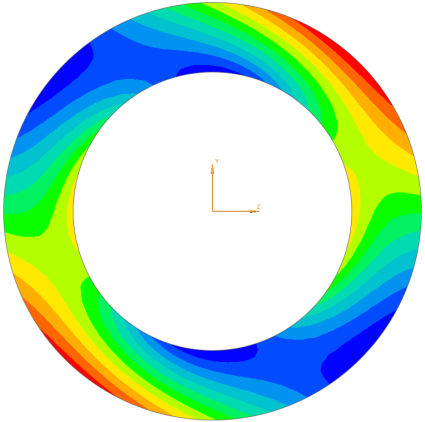

显示梁截面上的结果
可以显示选定的梁横截面上的应力和应变轮廓，要创建横截面显示：
-
创建模型的标准后处理视图。
-
点击后处理工具条上的横截面视图
 。
。 -
在选择选项卡上，选择一个单元并指定前或后并点击应用以创建显示。
提示
选择预览以帮助您在生成横截面视图前改善选择。
-
使用横截面视图对话框中的其余选项卡来进一步改善显示。
软件将自动在梁截面几何体上生成一个适应性网格并根据单元力、材料属性以及梁几何体计算应力。
